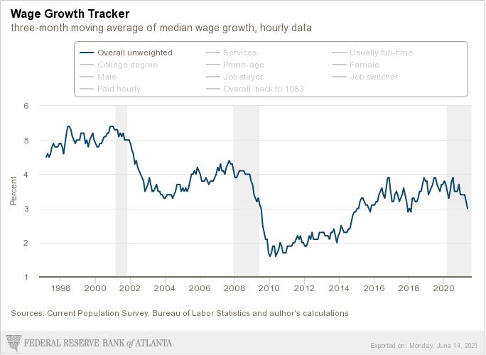

Will wage rises fuel inflation? And will the S&P continue to rise?
The former relates to my first post, which asks if inflation is likely to remain elevated. The latter is not so much a reasoned prediction, but meant to reassure savers - diversified index funds and regular contributions are all you need!
The wage-price spiral narrative is as follows: As inflation increases, workers expect higher inflation in the future. (They may also wish to earn higher wages to compensate for lower inflation-adjusted wages in the last quarter.) Thus they bargain for higher wages. They may wish to earn the same inflation-adjusted wages, or slightly more. This increases labour costs for firms, encouraging them to increase prices. But this causes higher inflation again, so wages adjusted for costs of living are lower than expected. And the process repeats.
Actually, I read that higher real wages increase disposal income, leading to higher consumer spending - thus encouraging firms to raise prices. But I prefer the former explanation, because it is not always clear that the best choice to -slightly- higher spending is to raise prices, rather than sell more units.
So I want to find evidence that this might or might not happen.
We are mostly interested in OECD countries and particularly the US, where these concerns are greatest. Let's have a look a wage inflation in the US first:
It looks like wage growth has fallen since the COVID-induced recession. This measure does not suffer from 'composition effects' - where lower paid workers lose their jobs, higher paid workers become a larger portion of employees, and this drives up average wages. Instead, a sample of workers is surveyed at the start and end of 12 months, and the median wage change for the whole sample is determined. Anyway, this fall suggests that we are not experiencing higher wage growth, a necessary stage in a wage-price spiral.
There's also the Employee Cost Index (ECI), which is a measure of labour costs both in terms of pay and benefits such as healthcare, insurance, pension contributions etc. Unless I've made an error, it seems to be falling as well:
*other OECD countries
*Impact of unions on wage inflation -ooh
This paper is fascinating.